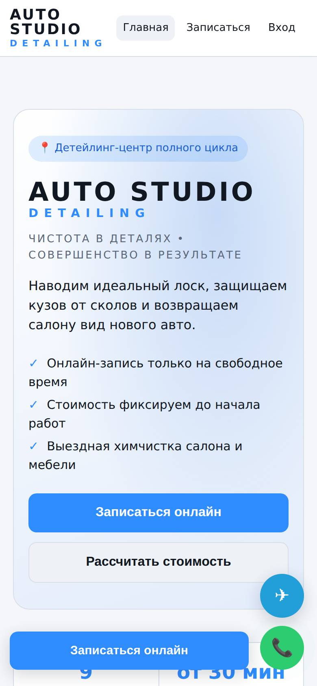
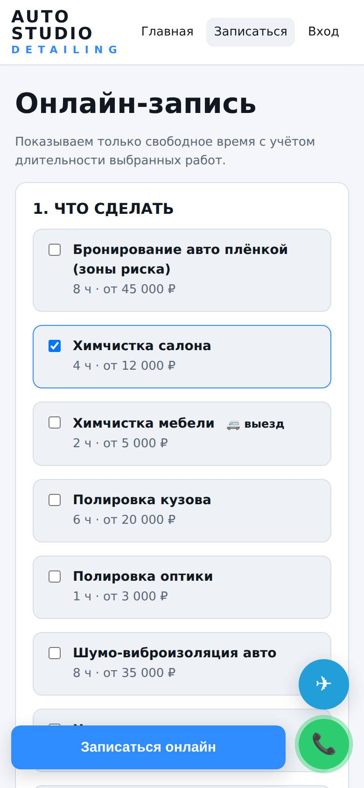

Сайт с онлайн-записью и CRM, который становится вашим за пять минут
Платформа для детейлинга, автосервиса, шиномонтажа и химчистки: лендинг, запись только на свободное время, кабинеты клиента и мастера, админ-панель с оплатами, расходами и отчётами. Название, цвет, тексты и контакты меняются в настройках, без программиста.

Путь клиента и где он фиксируется в системе
Каждый шаг оставляет след в базе, поэтому видно, где теряются клиенты и что приносит деньги.
Что система делает без участия людей
Сообщения клиенту
Запись подтверждена, напоминание за сутки, перенос записи, «автомобиль готов», напоминание о повторе услуги. Клиент подключается одной кнопкой в профиле, ссылка одноразовая.
Сообщения владельцу
Новая онлайн-запись, заявка на звонок, отмена, новый отзыв, совпадение старых заказов с новым клиентом.
Данные и доступы
Пароли хранятся только в виде хэша, перебор паролей ограничен, роли проверяются на сервере. Клиент не может сменить телефон и «присвоить» чужую историю. Загрузки проверяются по содержимому, выгрузка в Excel защищена от формул.
Бэкап и журнал
Ежедневная копия базы и фото, хранится 14 дней. Каждое действие сотрудника пишется в журнал, удалённый заказ можно вернуть из корзины.
Один продукт, любой бренд
Название, подпись, слоган, тексты главной, фирменный цвет, контакты и Telegram задаются в «Настройки → Бренд». Сайт сам подстраивается под светлую или тёмную тему устройства и под экран телефона.

- БрендНазвание, цвет, слоган, тексты, Telegram-контакты и канал.
- УслугиЦены «от», длительность в минутах, выезд, срок повтора.
- Цены по автоМножители для 11 типов кузова и 9 классов.
- ПравилаЧасы работы, боксы, выездные бригады, предоплата, срок отмены.
- КомандаМастера регистрируются по коду сотрудника, график — в «График мастеров».
- ЗапускСкрипт установки на сервер, Telegram-бот, домен и HTTPS.
Стоимость владения
Сайт работает на собственном сервере заказчика: данные хранятся у него, абонентской платы за CRM нет.
| Статья | Комментарий | Стоимость |
|---|---|---|
| Сервер (VPS) | Хватает самого простого тарифа: Node.js и встроенная база SQLite | от 300 ₽/мес |
| Домен .ru | Регистрация на год | ~200–300 ₽/год |
| HTTPS-сертификат | Let's Encrypt | бесплатно |
| Telegram-бот | Напоминания и уведомления | бесплатно |
| Онлайн-оплата | Подключается по договору с ЮKassa или банком | комиссия эквайера |